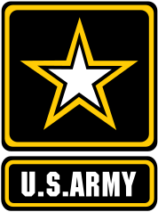

Journey to the West (Coast)
I hailed from the East Coast, around the New England area, and in 2013 started my journey westward. Spent 3 years around Phoenix, AZ before finally making it to a West Coast state - California. Summer of 2018, I packed my life into a Fiat Pop and set off for a year of traveling, hiking and wherever the winds and my whims took me.
Careers
Before starting on my coding journey, I worked in the federal government.
I was an Officer in the US Army for 11 years. From CBRN to procurement to repatriating remains, life wasn't boring.
For 5 years, I worked at the Department of Veterans Affairs as a Contracting Officer. I bought prosthetic limbs, implants and covered other emergency procurements. Nothing said emergency like a phone call from a hospital needing an immediate heart implant for next-day surgery.
Interests
Since 2017, I volunteered yearly at the Brewbies Festival, in which all proceeds go to R&D and raising awareness about breast cancer. I enjoy volunteering at music/food/cultural festivals and have been since 2015 in Arizona and California.